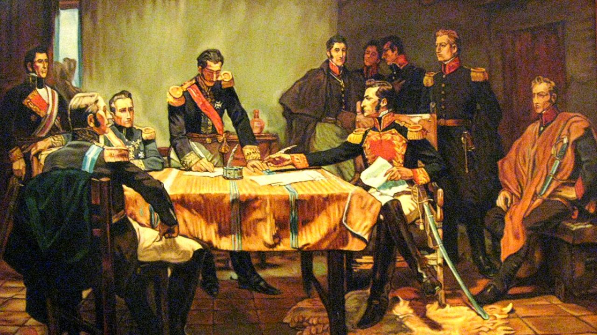
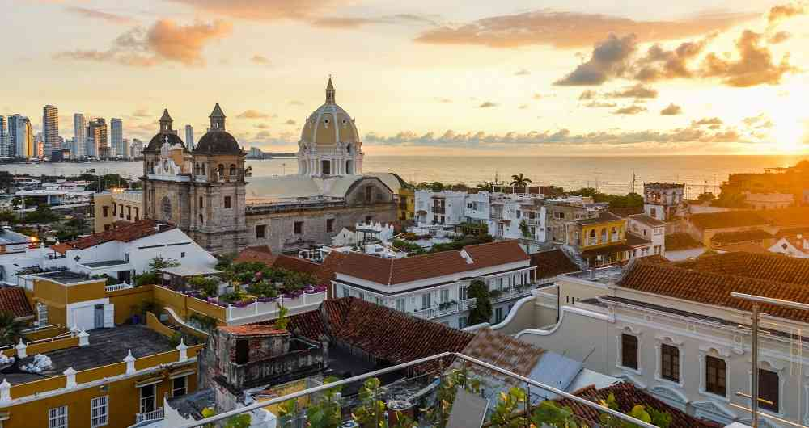

 El estudio de los primeros pobladores del territorio que hoy comprende la Nación se ha dividido en tres etapas de la época precolombina: el paleolítico (15 000-7000 a. C.), el periodo Arcaico Andino (7000 a 2000 a. C.), y el periodo formativo 2000 a. C. hasta el siglo XVI. Los primeros seres humanos que llegaron al territorio datan de aproximadamente 10 mil y 15 mil años. Los cazadores y recolectores nómadas de esta época utilizaban artefactos líticos, herramientas y armas hechas con piedra que datan de 10 450 a. C., hallados en El Abra, donde se comprobó que existían habitantes en la sabana de Bogotá en 10 500 a. C. En el siglo XV existían tres grandes familias que poblaban Colombia. La cultura Caribe se ubicaba en la costa del mar Caribe, la arawak en los ríos Caquetá, Amazonas y Putumayo, y los muiscas en la Sierra Nevada de Santa Marta y los altiplanos del centro del país. Esta última fue la que presentaba más pobladores y un significativo desarrollo en la agricultura, el uso de calendario, los jeroglíficos, y los rituales religiosos. El cacicazgo fue la organización social que primó antes de la Era Cristiana. Se caracterizaba por su orden social basado en una estratificación de la sociedad, las tribus se agrupaban de forma similar a como lo hacía el señorío. Así, el cacique era el que tenía el máximo poder.
 La independencia comenzó a gestarse a finales del siglo XVIII con la insurrección de los comuneros, la cual fue la primera manifestación de la identidad criolla, al marchar los insurgentes por la capital para protestar contra los nuevos impuestos de los españoles y reclamar su parte de la riqueza nacional. En 1808 Napoleón obliga al rey Carlos IV y al príncipe heredero Fernando VII a abdicar al trono y ceder la soberanía del imperio español a José de Bonaparte, hermano de Napoleón. Como resultado en Valencia se creó la Junta Suprema de España e Indias, como un reducto del gobierno español en oposición a la súbita invasión francesa. Dicha junta buscaba gobernar el imperio mientras se restauraba a Fernando VII al trono. El vacío político subsecuente tuvo por resultado una mayor inherencia de los "criollos" (descendientes de españoles nacidos en las colonias) en el gobierno de las provincias.